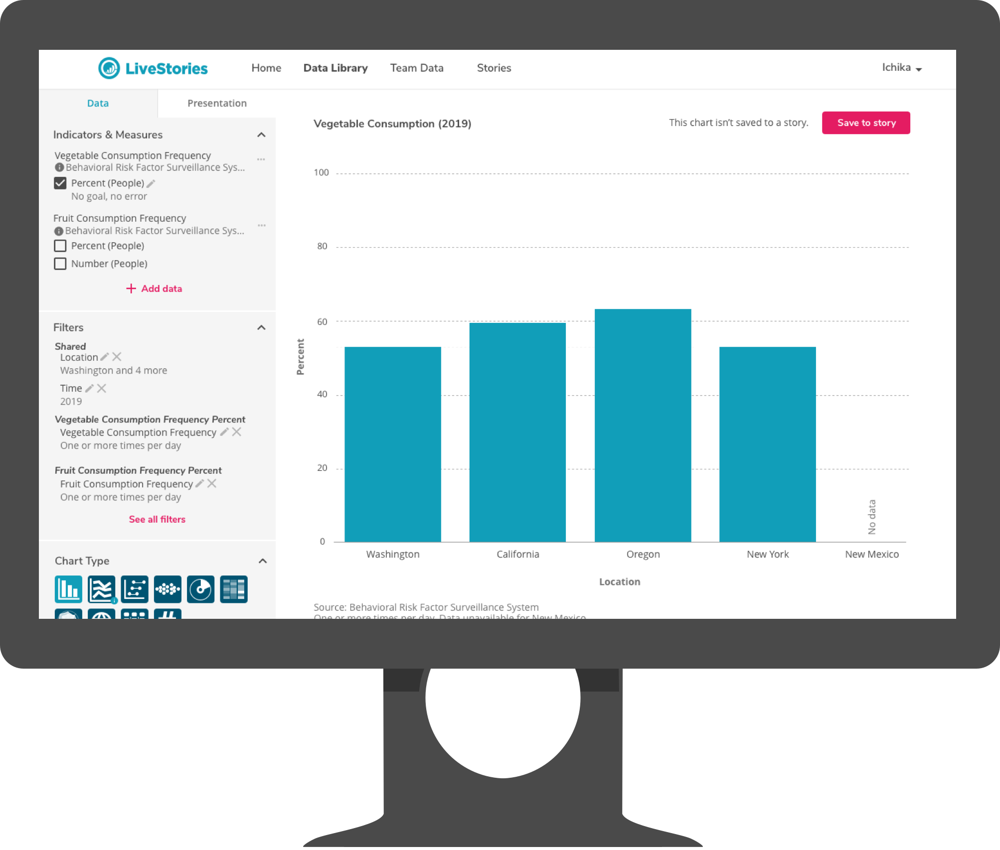

LiveStories Rebranding and Redesign
Public health organizations compile huge amounts of data, and are tasked with presenting that data as part of government-mandated assessments, as well as to their constituents.
As the sole designer at LiveStories, I redesigned the UX/UI of entire product, including overhauling the UX/UI for its website and core data visualization tools, and the branding and product design language. All this was to make “data about how we work, live, and play” more accessible, especially to those who are not “data experts.”

A banner from the LiveStories branding redesign
Process
The main challenge of the product was: how do you make complicated health data easy to browse and understand? Most LiveStories users were experts with data, but not with online tools; they wanted to create compelling interactive charts for their audiences, but didn't know how to do so without taking away time from their other responsibilities.
Knowledge about data science also varied between users. A concept that one user calls an “indicator” is known to another as a “dimension,” and both of these things are concepts not generally ell-known to constituents who were the target audience of visualizations.
I started all concepts from sketches.

A sketch for how filtering charts should work
Once I had a general idea for a feature, and feedback from the VP of Product and development teams on what parts seemed most challenging to understand and develop, I started tested. I created a process for user testing new features on our existing customer base, using low-fidelity click-through prototypes and live builds. I interacted with all customers remotely.

A screenshot of a low-fidelity prototype
I also created high-fidelity mockups and wrote detailed technical requirements for direct hand-off to three different development teams responsible for web UX/UI and data visualization UX/UI. Two teams were local, one was remote, an I supported all engineering teams through sprint cycles, providing detail for unforeseen edge cases, and adjusting design when necessary to ensure sprint goals were met.
A screenshot of a high-fidelity mockup
The updated designs were viewed by users as simpler, cleaner, and more straightforward compared to both existing designs and their current charting tools. The design was viewed as extremely successful in the context when organizations “just needed a chart,” and didn't want to wade through spreadsheets of number data just to present a simple number to the public.
Stickers
I also made clear stickers for our hack-a-thon!


Stickers for participants and winners